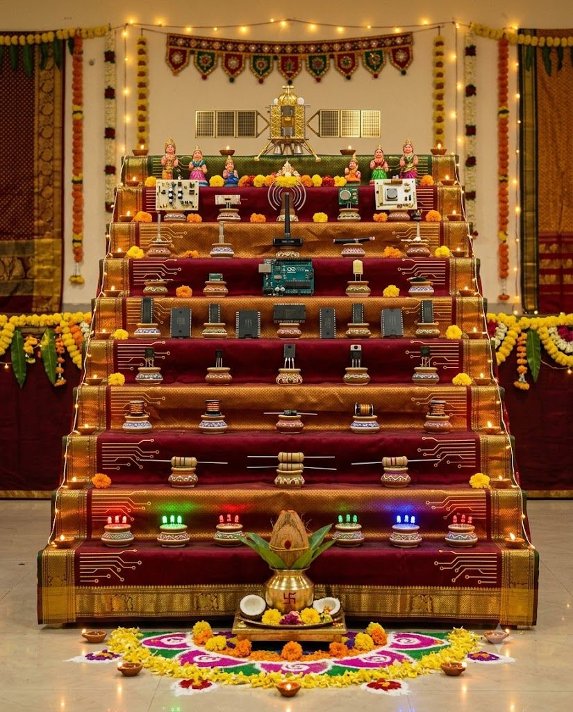

Tap a step on the golu to see what is on it
Navarathri Golu
Department of Electronics and Communication Engineering
Nine nights, nine steps. Instead of dolls, our golu carries the building blocks of electronics, from a simple LED up to a satellite.
Nine nights, nine steps. Instead of dolls, our golu carries the building blocks of electronics, from a simple LED up to a satellite.